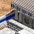
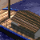
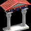

RM Brawl 1.28 Change Log (AOE:DE)
Below are shown all of the changes compared to Age of Empires Definitive Edition (v46777)
Civilization changes can also be found from the Tech trees page.
Age Adjustments
Age up costs have been adjusted.
Stone Age and Tool Age have now been Combined into one age (Stone Age)
Bronze Age has now been split into two Ages (Bronze and Iron Age)
Iron Age has been renamed to Classical Age.
The old ages are transitioned as follow:
Stone age (1) = Stone age (1)
Tool Age (2) = Stone age (1)
Bronze Age (3) = Bronze Age (2)
_ = Iron Age (3)
Iron Age (4) = Classical Age (4)
Below is a list of all units and technologies which do not follow the above-mentioned rules.
These changes can also been found from unit information page.
 Gold Mining
Gold Mining
Age requirement Tool Age (2) -> Bronze Age (2)
 Medium Wall
Medium Wall
Age requirement Bronze Age (3) -> Iron Age (3)
 Artisanship
Artisanship
Age requirement Bronze Age (3) -> Iron Age (3)
Additional Town Centers
Age requirement Bronze Age (3) -> Iron Age (3)
 Broad Sword
Broad Sword
Age requirement Bronze Age (3) -> Iron Age (3)
 Cavalry
Cavalry
Age requirement Bronze Age (3) -> Iron Age (3)
 Camel Rider
Camel Rider
Age requirement Bronze Age (3) -> Iron Age (3)
 Composite Bow
Composite Bow
Age requirement Bronze Age (3) -> Iron Age (3)
 Stone Thrower
Stone Thrower
Age requirement Bronze Age (3) -> Iron Age (3)
Academy
Age requirement Bronze Age (3) -> Iron Age (3)
 Fishing Ship
Fishing Ship
Age requirement Bronze Age (3) -> Iron Age (3)
Merchant Ship
Age requirement Bronze Age (3) -> Iron Age (3)
Astrology
Age requirement Bronze Age (3) -> Iron Age (3)
Ballistics
Age requirement Iron Age (4) -> Iron Age (3)
 Iron Shield
Iron Shield
Age requirement Iron Age (4) -> Iron Age (3)
 Chain Mail infantry
Chain Mail infantry
Age requirement Iron Age (4) -> Iron Age (3)
 Chain Mail Archers
Chain Mail Archers
Age requirement Iron Age (4) -> Iron Age (3)
 Chain Mail Cavalry
Chain Mail Cavalry
Age requirement Iron Age (4) -> Iron Age (3)
 Guard Tower
Guard Tower
Age requirement Iron Age (4) -> Iron Age (3)
 Coinage
Coinage
Age requirement Iron Age (4) -> Iron Age (3)
 Siege Craft
Siege Craft
Age requirement Iron Age (4) -> Iron Age (3)
 Trireme
Trireme
Age requirement Iron Age (4) -> Iron Age (3)
Heavy Transport
Age requirement Iron Age (4) -> Iron Age (3)
Fanaticism
Age requirement Iron Age (4) -> Iron Age (3)
Monotheism
Age requirement Iron Age (4) -> Iron Age (3)
Age up costs and requirements have also been adjusted.
Bronze Age (2nd age)
Requirement Archery Range and Stable
Food cost 700
Iron Age (3rd age)
Requirement Temple and Government Center
Food cost 800
Gold cost 400
Classical Age (4th age)
Requirement Siege Workshop and Academy
Food cost 1200
Gold cost 600
Economy
 Gazelle
Gazelle
Food amount 150 -> 180
Gazelles on big pack 6 -> 5
Now getting second pit with gazelles is easier.
Having extra gazelles instead of extras elephants isn't as bad now.
Bad starting Gazelles can now be pushed to the TC decently well.
 Fisherman
Fisherman
Work rate 0.6 -> 0.5175
Carry capacity 10 -> 20
Good storage pit position in water maps is rare but having that gives too strong start.
Now there is more possible storage pit positions but none of them too strong to give game deciding advantages.
 Farm
Farm
Wood Cost 75 -> 50
Food amount 250 -> 150
Now players can choose between stronger economy and early aggression.
Previously the Farm upgrades came too late to have any effect on early game..
 Plow & Irrigation
Plow & Irrigation
Extra food on farms 100/125 -> 75
With cheaper Farms these technologies wold have been too strong.
Hill Country & Highland
Old elephant spawn (12-0 distance) Spawn amounts 7+(1 per map size) -> 5+(1 per map size)
New Elephant spawn One Elephant for each player, Distance from TC 20-28
There needs to be always enough resources to do something more than 18 villager rush.
Defense
Villagers were too weak, the only defense was to wall up.
 Villager
Villager
Hit points 25 -> 35
Movement speed on Tool Age 1.21 -> 1.1
 Linen Cloth (New technology)
Linen Cloth (New technology)
Requires Stone Age
Gold cost 75
Research time 20 seconds
Research location Town Center
Effect Villagers +5 hit points, +1 armor base melee
 Small Wall
Small Wall
Hit points 200 -> 120
Stone cost 5 -> 4
Wood cost 0 -> 3
New requirement Stone mining
 Watch Tower
Watch Tower
Range 5 -> 6
Damage 3 -> 4
 Sentry Tower
Sentry Tower
Damage 4 -> 5
 Wheel
Wheel
Villager bonus movement speed +50% -> +45% (1.76 -> 1.595)
 Ballista Tower
Ballista Tower
Upgrade
Food Cost 1800 -> 1000
Stone Cost 750 -> 600
 Zealotry
Zealotry
Villager bonus hit points +40 -> +30
 Medium Wall & Fortified Wall
Medium Wall & Fortified Wall
Stone cost 5 -> 4
Wood cost 0 -> 3
Stone Age Fights
Leather Armor Infantry/Archers/Cavalry & Toolworking
Gold cost 0 -> 25
 Battle Axe
Battle Axe
New requirement Stone mining
 Slinger
Slinger
Movement speed 1.2 -> 1.1
Training time 35s -> 30s
New requirement Stone mining
Slingers were too strong against all Tool Age units. Now they are more dedicated to fill up Axemen weak spots rather than being all around good unit on themselves.
Archery Range
New requirement Woodworking
Stable
New requirement Domestication
 Scout
Scout
Pierce armor 0 -> 1
Movement speed 2.0 -> 1.8
Now that scouts aren't as strong rush units they can possess better combat strengths.
 Transport Ship
Transport Ship
New requirement Woodworking
 Scout Ship
Scout Ship
New requirement Woodworking
Bronze Age Fights
 Chariot Archer
Chariot Archer
Gold cost 0 -> 35
Movement speed 2.0 -> 1.8
 Chariot
Chariot
Gold cost 0 -> 50
Movement speed 2.0 -> 1.8
Hit points 100 -> 130
 Logistics
Logistics
Bonus removed Barrack units take ½ population
New bonus Barracks work 50% faster
Half population costing units cause path finding problems in team games. Having 3 or more Legion producing players in a full on 4v4 games caused the servers to lag.
Now Swordsmen can be used as a cheap harassing unit.
Iron Age Fights
 Stone Thrower
Stone Thrower
Blast width 0.5 -> 0.7
Armor base pierce 0 -> 2
Preparing to use siege took too much resources and time. Even in the best match ups the Stone Throwers were only decent option.
Mathematics (New technology)
Requires Iron Age
Food cost 120
Wood cost 60
Research time 50 seconds
Research location Government Center
Effect All siege units +1 range and LoS
Bronze Age aggression can be stopped too easily by creating Medium Walls, causing all players to go into Iron Age.
Now players can use Bronze Age units longer, giving civilizations with poor Iron Age better choices.
Academy
Wood cost 150 -> 200
 Trireme
Trireme
Reload time 1.89s -> 2.1s
Classical Age Fights
 Scythe Chariot
Scythe Chariot
Gold cost 0 -> 50
Movement speed 2.0 -> 1.8
Hit points 120 -> 170
Armor base melee 1 -> 3
Horse Archer
Hit points 60 -> 75
Horse Archer was too weak unit on a civilizations which didn't have access to the HHA upgrade.
Raiding isn't as effective as it used to be because of stronger villagers.
Hittite and Yamato received nerfs to their HA and HHA.
 Engineering
Engineering
New requirement Mathematics
Effect All siege units +2 range and LoS -> +1 range and LoS
Max range should remain same.
Catapult & Heavy Catapult
Armor base pierce 0 -> 2
Catapult Trireme
Damage 35 -> 50
Juggernaught
Damage 35 -> 60
 Fire Galley
Fire Galley
Bonus damage taken from catapults 10 -> 0
Bonus damage taken from Ballista/Helepolis 5 -> 0
Unnecessary complication to otherwise clean bonus damage list.
Now that Helepolis has a base damage of 45 the +5 makes it too good against Fire Galleys.
Fire Galleys should be the strongest water units since they can not posses a good threat to land units.
Armored Elephant, Juggernaught, Ballista Tower, Legion, Scythe Chariot, Cataphract, Heavy Catapult, Heavy Horse Archer, Helepolis & Centurion
Removed all requirements
These requirements weren't useful.
They either caused pointless memorizations or were limiting the technology tree choice and civilizations differences.
E.g. Now a civilization can get Centurion without Aristocracy making the available unit varieties more than just have it all or none at all choices.
Civilization Changes
 Linen Cloth
Linen Cloth
Available for all civilizations.
Mathematics
Available for all civilizations.
Catapult
Enabled for all civilizations (Carthaginian, Choson, Egyptian, Phoenician, Yamato)
Unique Technologies
All civilizations will have one unique technology in Iron Age.
Researched from Government Center, 60s research time, cost varies between three tiers.
Tiered Cost System
Tier 1 75F, 50G [5] (Carthaginian, Choson, Egyptian, Greek, Shang)
Tier 2 150F, 75G [4] (Assyrian, Babylonian, Hittite, Yamato)
Tier 3 200F, 125G [7] (Macedonian, Minoan, Palmyra, Persian, Phoenician, Sumerian, Roman)
Assyrian - Arson
Cost 150F, 75G
Effect Melee units deal +5 damage to buildings
Babylonian - Plain Bearing
Cost 150F, 75G
Effect All chariot units move 15% faster
Carthaginian - Panoply
Cost 75F, 50G
Effect All Academy units +30% HP
Choson - Fletching
Cost 75F, 50G
Effect All Archers +1 range
Egyptian - Dipylon Shield
Cost 75F, 50G
Effect Hoplites attack 20% faster
Greek - Lead Bolts
Cost 75F, 50G
Effect Slingers +2 Range
Hittite - Mahawi
Cost 150F, 75G
Effect Camel Riders attack 20% faster
Macedonian - Dry Dock
Cost 200F, 125G
Effect War ships +2 attack
Minoan - Machicolation
Cost 200F, 125G
Effect Towers +1 attack
Palmyra - Vamplate
Cost 200F, 125G
Effect Academy units +1 slash armor
Persian - Linothoracs
Cost 200F, 125G
Effect All barrack units +1 slash armor
Phoenician - Padded Armor
Cost 200F, 125G
Effect All barrack units +1 pierce armor
Roman - Bodkin
Cost 200F, 125G
Effect All bowmen ignore unit armor
Shang - Husbandry
Cost 75F, 50G
Effect Stables work 33% faster
Sumerian - Phajaan
Cost 200F, 125G
Effect Stable units +1 attack
Yamato - Chemistry
Cost 150F, 75G
Effect Siege units +10 damage
Assyrian
Bonus removed Villagers move 10% faster
Bonus Archers fire 33% faster -> 25% faster
New bonus Military buildings cost -20%
With extra movement speed the villagers were surviving too well against Axemen.
Still needs economy bonus.
Babylonian
Bonus removed Market technologies are 30% cheaper
New bonus Builders work 33% faster
New bonus Storage Pit technologies cost -40%
New bonus Dock technologies are free
Technology enabled Trireme
Babylonian has a good unit roster but no way to utilize them all.
30% cheaper market upgrades gave power to CA ruses and to a late Bronze/Iron Age wars, but with no unit bonuses and a weak Iron Age the bonus wasn't yielding good enough results.
Carthaginian
Bonus removed Camel Riders +15% HP
Bonus removed Elephants and Academy units +25% HP
Bonus Start the game with +50 of each resource -> +30 of each resource
New bonus All archers +15% HP
New bonus Counter units deal +50% bonus damage
+50 was overkill, +30 is a lot better.
Now Carthaginian has good Bronze Age units and isn't a Tool Age rush / late Iron Age civilization.
Choson
Bonus removed Storage Pit technologies are 40% cheaper to research
Bonus Axemen +5 HP -> +10 HP
New bonus All ranged units benefit from shield upgrades
New bonus All stable units +1 slash armor
New bonus Farms and Houses +75% HP
Choson was too weak on water maps. It had no economy bonuses and it's other bonuses didn't contribute much to its weak navy.
The +5 HP on Axemen was barely noticeable. Any civilization with a small economy bonus was able to create stronger Axeman army.
Having cheaper Storage Pit technologies was a good bonus for upping the Tool Age power and enabling Cavalry rushes, but the Iron Age was still all about Legions.
Egyptian
Bonus removed Farms are 20% cheaper
Bonus All chariot units +33% HP -> +20% HP
New bonus Aging up is 15 seconds faster
New bonus Start the game with +75 gold
Technologies disabled Improved Bowman, Composite Bowman
Having cheaper farms gave too strong late Bronze Age and Early Iron Age.
Now Egyptian has more ways to survive at Tool Age but doesn't accumulate so much power towards late Bronze Age.
Greek
Bonus removed Town Centers work 10% faster starting in the Tool Age
Bonus removed Academy units cost -20%
Bonus removed Academy units move 30% faster
New bonus Foot soldiers and siege workshop units move 5/10/15/20% faster at Stone/Bronze/Iron/Classical Age (respectively)
New bonus All cavalry units +10% HP
New bonus All buildings +5 Line of sight
Technology enabled Improved Bow
Greek late Iron Age was too strong whilst having too weak Bronze and Tool Age.
Greek needed more power at early game and not at Iron Age.
Hittite
Bonus Scout Ship and War Galley +2/3/3 range at Tool/Bronze/Iron Age -> Scout Ship and War Galley +3 range
New bonus Starts the game with +2 headroom
Technologies disabled Nobility, Elephant Archer
Technology enabled Fishing Ship
Small economy bonus gives Hittite good enough start to compete with any other civilization during Tool Age.
With Nobility disabled Hittite CA and HHA are no longer too dominant late game units.
Hittite had too strong Iron Age with the buffed Elephant Archers.
Macedonian
Bonus removed Academy units +1/+2 pierce armor at Bronze/Iron Age
New bonus Swordsmen and Academy units +1 pierce armor
Technology disabled Aristocracy
Technologies enabled Temple, Priest
With only +1 pierce armor for Centurions Macedonian has to rely more to its siege to counter high damage ranged units at late Iron Age.
Minoan
Bonus removed Composite Bowmen +2 range
Bonus ships cost - 30% -> -15%
Bonus Farms +60 food -> +50 fod
New bonus Houses support an additional +1 headroom
New bonus Improved and Composite Bowmen have base range of 8
Technology disabled Aristocracy
Technology enabled Guard Tower
Getting Fishing boats with 40 wood cost gave strong economy lead on water maps. Stacked with cheaper war ships Minoan was strong at every stage on water maps.
Palmyra
Bonus removed Start the game with +75 food
Bonus removed Villagers +1 pierce/slash armor
Bonus removed Villagers work 25% faster at all tasks
Bonus removed Tributes are free
Bonus removed Trade ships return 2x gold
Bonus removed Villagers cost 75 food
Bonus Camel Riders move 25% faster -> 15% faster
New bonus Market upgrades cost -40%
Technologies enabled Logistics, Metallurgy
High cost Villagers with much faster work rate created weak early game and very strong mid game in most games.
Normal starts were slow and easy to punish, but with a good elephant start Palmyra got its economy rolling too fast.
Persian
Bonus removed Hunters work 30% faster
Bonus Triremes fire 33% faster -> 20% faster
New bonus Hunted animals grant 40% more food
New bonus All Temple technologies cost wood instead of gold
Technology disabled Heavy Horse Archer
Technologies enabledAcademy, Hoplite, Ballistics
Now the hunting bonus is making animals last longer giving power towards the mid game, and not just at the start of the game.
Persian didn't have any thrash units and using so much gold to Priests was almost never a good choice.
Without Ballistics Horse Archers and Elephant Archers were barely usable.
Triremes with Ballistics and Artisanship are much stronger, the +33% fire rate in top was too much.
Phoenician
Bonus removed Catapult Trireme and Juggernaught fire 42,9% faster
Bonus All elephant units cost - 25% -> -20%
New bonus All Temple technologies give bonus HP to Priests (Max 95 HP)
Technologies disabled Catapult Trireme, Juggernaught
Technology enabled Metallurgy
Having faster woodcutters is enough to ensure strong water battles.
Phoenician EA was too strong.
Roman
Bonus Swordsmen attack 50% (33% listed) faster -> 25% faster
Roman was too good at rushing.
Shang
Bonus removed Starting food -40
New bonus 25% increased military buildings cost
Technology enabled Trireme
Reduced starting food did do made Shang more balanced, but it didn’t fix the problem.
Shang was able to grow economy and military too well together. Now when Shang wants to commit into military its economy growth is slowing down enough for other civilizations to catch up, and to be able to surpass it at certain times.
Couldn't play aggressive enough in water maps to justify the extremely weak Iron Age navy.
Sumerian
Bonus Stone Thrower, Catapult & Heavy Catapult fire 42,9% (30% listed) faster -> 30% faster
Bonus Farms + 125 food -> +75 food
Bonus removed Villagers +15 HP
New bonus Villagers get +5 HP on age up
New bonus All units cost -10 wood
The extra +15 HP in top of the Linen Cloth was too much at Tool Age.
Yamato
Bonus removed Villagers move 10% faster
New bonus Foragers work 15% more efficiently
New bonus Towers fire 25% faster
New bonus Infantry units +1 attack
Technologies disabled Alchemy, Catapult Trireme, Juggernaught, Engineering
With extra movement speed the villagers were surviving too well against Axemen.
Needs something for the Tool Age.
Yamato was too good in water maps. There was no need to make it one of the strongest water civilizations at all stages of the game.
Yamato had too strong early Iron Age presence with the buffed Horse Archers.